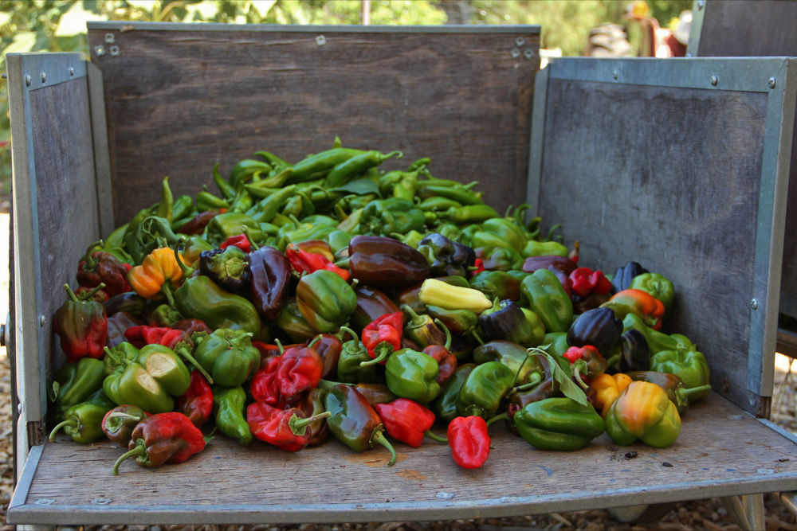

Sustainably grown. From our family to yours.
Paul Piper and his family carry the Piper family tradion of organicaly grown peppers from generation to generation. They take pride in their produce, so you can enjoy the fruits of their labor. The Piper family has been in the business of growing and pickling peppers for years. There's nobody that's been in the business of pickling peppers longer than the Pipers. Taste our peppers and taste the Piper family pride.
See our products page for where you can find our delicious pickled peppers. If you're looking to take a scenic drive out to the Piper farm to pick a peck, take a look at our contact page for information about where to find us!